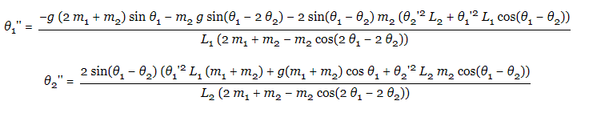

Double Pendulum
Here we decided to plot the motion of the outter bob as the inner one was plotted in our Simple Pendulum experiment. One can see that the path the bob takes is clearly more akin to chaos. In order to help visualize this, we decided to add the functionnality of showing the Phase-Space plot of Angle 1 versus Angle 2. One can also notice that as time goes by, the simulation (without the phase plot) draws a 3D sphere.This could lead to an interesting follow-up to this project; how can the chaos generated by mechanical system generate geometry and art pieces.
Here as we plot the Phase-Space, one can realize that the system only follows one normal mode (when the pendulums are in sync, i.e. when the angle of each bob with respect to the vertical axis are equal). The system does not follow any other normal mode. What is interesting however is that even if the system followed the mode where the bobs are in synchronized, it doesn't take long for it to become truely chaotic.
The equations of angular acceleration derived for this system were as follow:
